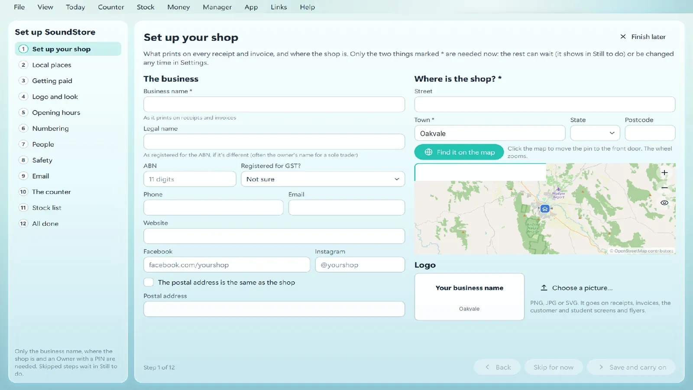
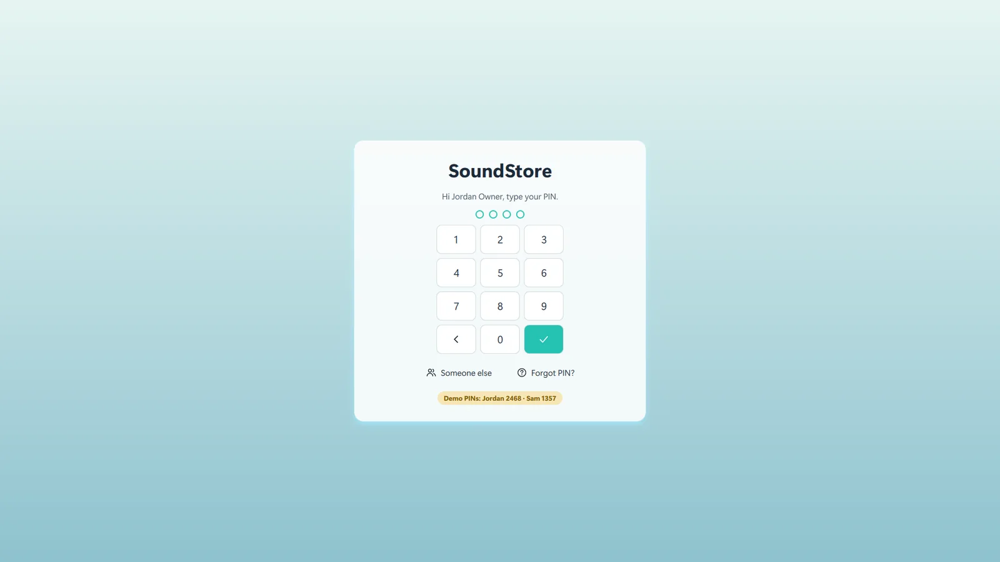
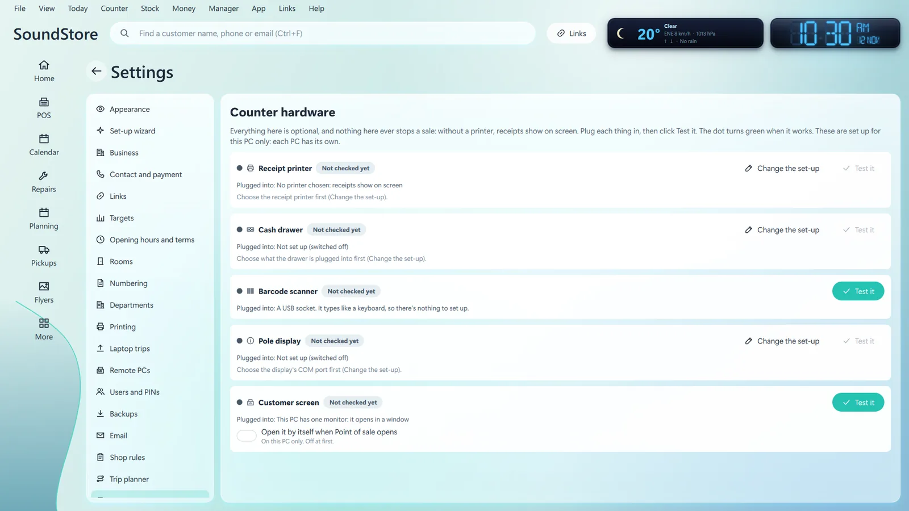
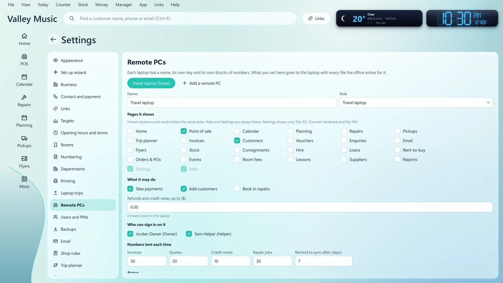

01 / 05 · Setup, staff & safety
Set up a new shop with the wizard
First start
The set-up wizard walks a new shop through its details, people, backups, email, the counter and the stock list.
- Skip a step and Home's Finish setting up card reminds you.
- Try it first with a full demo shop, then Go live when you're ready.

02 / 05 · Setup, staff & safety
Every person signs in with their own PIN
Settings · People and PINs
Each person has their own name and PIN, as a Helper or an Owner, so every sale and change says who did it.
- Owners decide who sees what, and money settings stay Owner-only.
- The screen locks when idle.
- Choose the menu, Home's buttons and Home's cards for the shop.

03 / 05 · Setup, staff & safety
The counter's hardware, tested
Settings · Counter hardware
One card each for the receipt printer, cash drawer, scanner, pole display and customer screen, each with a test.
- Each PC keeps its own printer, drawer and displays.
- A failed receipt or drawer turns its card red and shows at the counter.

04 / 05 · Setup, staff & safety
Backups in three places
Settings · Backups
Every backup is checked, kept on this PC, copied to OneDrive or another drive, and to the shop's USB stick.
- An automatic backup the first time the app starts each day.
- A backup before anything big: a restore, an import, a merge.
- Test restore and Check SoundStore prove it all works.

05 / 05 · Setup, staff & safety
Travel and teacher laptops
Settings · Remote PCs
Take a laptop to a stall or a school. It carries only the pages, people and numbers you choose, and syncs back in a signed file.
- Refund limits and what it may do, set at the office.
- A teacher laptop carries only that teacher's students.
- A lost laptop's key is cancelled and its unused numbers listed as gaps.
